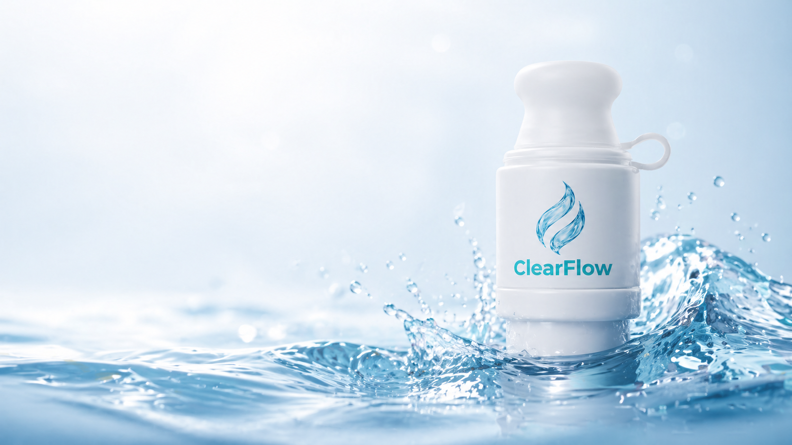

Most articles about water filtration focus on the wilderness or international travel — situations most people don't face most days. The water you actually drink, every day, is from a desk fountain, a gym tap, a hotel bathroom, or a single-use bottle from a vending machine. That's where the daily exposure to microplastics is happening — and that's the easiest place to fix it.
For the broader filter context, see our Portable Water Filter — Complete Buyer's Guide.
The daily-water reality
Track your typical week. Where does the water actually come from?
- Office water cooler (often a 5-gallon plastic jug)
- Office tap (variable plumbing age)
- Coffee shop / café water
- Gym water fountain (often the lowest-maintained tap in the facility)
- Single-use bottled water from a vending machine
- Restaurant tap (filtered, hopefully)
- Car cup-holder bottled water that's been heated and re-cooled
Every one of those, in U.S. and EU studies, contains microplastics. The single-use bottled water typically has the highest count. The 5-gallon office jugs, surprisingly, often have similar counts — same plastic, larger volume, longer storage.
The water cooler problem
Office 5-gallon water coolers feel like a "premium" alternative to tap. They are not — they are a plastic bottle with all the same issues, scaled up. Specifically:
- Storage time and temperature. 5-gallon jugs sit in warehouses, then under desks, often near the cooler's compressor (warm). Heat accelerates microplastic release.
- The dispensing pierce point. The plastic seal that gets pierced by the cooler tap is a particle-shedding moment.
- Multi-use. Many bottled-water companies wash and refill jugs. Each cycle adds physical wear to the plastic.
If your office water cooler feels healthier than tap, it's mostly perception. The actual contaminant load is comparable or worse than what the building's tap would deliver — particularly in newer office buildings with PEX plumbing.
The gym water fountain problem
Gym water fountains are a more complex case. The water source itself (municipal tap) is fine. The issues:
- Lower maintenance frequency. Filters in fountains often go past replacement intervals.
- Heavy use. Many people, many fillings, many opportunities for backflow contamination.
- Microplastic carry-through. The fountain's filter (if any) is rarely sub-micron.
The fix isn't avoiding gym water — staying hydrated during workouts is non-negotiable. The fix is filtering at the point of consumption: fill from the gym tap, drink through your own bottle-top filter.
The commute / car problem
The car cup-holder is one of the worst environments for bottled water:
- Direct sunlight through windshield — UV exposure
- Heat cycles — 90°F+ in summer cars, then cool overnight
- Days or weeks of storage between uses
A 2021 study found that PET bottles stored at 30°C for 14 days had 3–8× the microplastic content of bottles kept refrigerated. A summer car interior easily hits 100°F (38°C), accelerating release further.
The behavior change worth making: refill your bottle in the morning from a filtered source rather than buying a fresh bottled water at a gas station every day. The cost savings alone are significant; the exposure reduction is meaningful.
Why a bottle-top filter is the right answer for daily use
Here's why ultrafiltration cap-style filters dominate this category:
- You already carry a bottle. A bottle-top filter adds nothing to your day pack — it replaces or augments the cap on the bottle you already use.
- Works with any standard bottle. Hotel water, gym tap-fill, office cooler, or single-use vending machine — same filter, different source.
- Per-liter cost is the lowest. A bottle-top microfiltration filter at ~$0.04/L beats every alternative including pitcher filters.
- Particulate protection. ClearFlow's 2-micron membrane captures microplastics and visible particulates from a gym fountain.
- No setup. No pump, no battery, no waiting. Sip pressure does the work.
What to look for in a daily-use filter
- A mechanical membrane with a stated micron-scale pore size. Carbon-only filters that just "improve taste" don't reliably remove microplastics.
- 1881 DIN universal bottle thread. Works with any standard PET bottle — single-use or refillable.
- Hollow-fiber ultrafiltration membrane (not just carbon).
- Replacement-filter price under $20. Daily-use filters need replacement every 6–12 months. The replacement economics matter.
- Compact form factor. A filter that doesn't fit in a gym bag side pocket gets left at home.
- BPA-free housing. The whole point is reducing plastic exposure — don't let the filter housing add to the problem.
The daily-use filter, designed for the way you actually live.
ClearFlow snaps onto any standard PET bottle — gym, office, hotel, anywhere. 2-micron microfiltration in a cap that fits in your bag.
- Universal 1881 DIN thread — works with any standard bottle
- 99% microplastic reduction (particles 2 microns and larger)
- ~$0.04 per liter — cheapest filtered water you can drink
FAQ
Is the office water cooler better than tap water?
Often no. 5-gallon plastic jugs share the same microplastic issues as smaller bottles, with the additional factors of long storage time and warmth from the cooler unit. Filtering office tap with a bottle-top microfiltration filter is generally cleaner.
Is gym fountain water safe to drink?
Yes, in most jurisdictions. The water is municipal tap and microbiologically safe. The case for filtering it is microplastic exposure, plus the bacterial bonus from sometimes-neglected fountain filters.
Should I use a filter on bottled water?
Yes — counterintuitively. Bottled water has more microplastics than tap on average. A bottle-top filter on commercial bottled water gives you the convenience of bottled water with significantly less microplastic exposure.
How often do I need to replace a daily-use bottle filter?
Typical bottle-top membrane filters last 800–1,500 liters of municipal tap water. For an adult drinking 2 liters/day, that's roughly 1.5–2 years. Flow-rate slowdown is the practical signal to replace.
Will a bottle filter fit a Hydro Flask, Yeti, or Stanley bottle?
Most bottle-top filters are designed for the standard 1881 DIN PET thread. Hydro Flask, Yeti, and Stanley use proprietary threads and typically aren't compatible. Use a standard PET bottle (single-use or refillable PET) with the filter.
Related reading
Pillar Guide
Portable Water Filter — Complete Buyer's Guide
Filter types, technologies, certifications.
Cluster
Microplastics in bottled water
Why your "premium" bottled water is part of the problem.
References
- Mason, S. et al. (2018). Synthetic Polymer Contamination in Bottled Water. Frontiers in Chemistry.
- Zuccarello, P. et al. (2021). Microplastics in PET bottles: temperature-dependent release. Environmental Pollution.
- WHO (2019). Microplastics in drinking-water. World Health Organization.
- U.S. CDC — Drinking Water.